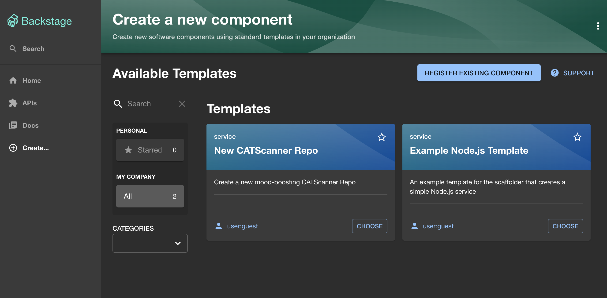
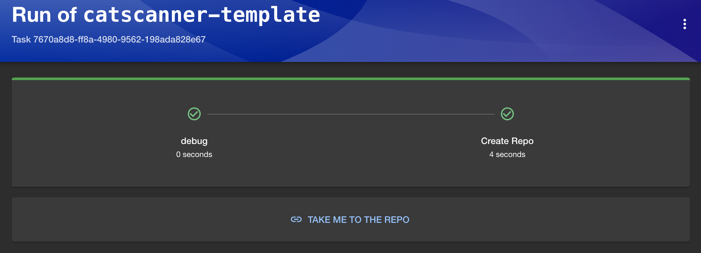

Part 1 - Creating a template
In this exercise we will create a new template for your Backstage instance. This will be a simple template that will be used to create a new repository in GitHub.
Firstly, we need to create a new folder containing a yaml file in our backstage
installation. We can call this examples/catscanner/template.yaml This file
will contain our template.
We can then start by adding some basic template configuration to the file. Like so:
apiVersion: scaffolder.backstage.io/v1beta3
kind: Template
metadata:
name: catscanner-template
title: New CATScanner Repo
description: Create a new mood-boosting CATScanner Repo
spec:
owner: user:guest
type: service
# These parameters are used to generate the input form in the frontend, and are
# used to gather input data for the execution of the template.
parameters:
- title: Create a new repo
required:
- repoUrl
properties:
repoUrl:
title: Repository Location
type: string
ui:field: RepoUrlPicker
ui:options:
allowedHosts:
- github.com
# These steps are executed in the scaffolder backend, using data that we gathered
# via the parameters above.
steps:
- id: debug
name: debug
action: debug:log
input:
message: Hello World
# Outputs are displayed to the user after a successful execution of the template.
output:
links:
- title: Take me to the repo
url: ${{ steps['create-repo'].output.remoteUrl }}
This template will ask for a new repo name and then simply log Hello World to
the log when executed.
To make this template show up in our backstage instance we need to add the
location to our app-config.yaml. This tells backstage where to look for this
file. You can add a new location under catalog.locations like below:
You can then start your backstage instance and you should see the new template in the templates section.

Creating a repo
Now that we have a skeleton of our template we can enhance it to make it create a repo for us.
There are a number of built in actions that we can take advantage of in our templates.
To create a new repo, use the publish:github action by adding the following to your template.yaml in the spec.steps section:
- id: create-repo
name: Create Repo
action: publish:github
input:
repoUrl: ${{ parameters.repoUrl }}
Refreshing Template Changes
The changes may not be immediately visible. You can the refresh the template by going to the catalog, changing the "kind" filter to "Template", clicking on your template and then clicking the refresh button in the about card.
Now, go to your template, enter the repo details and it should create a new repo in GitHub for you. Use for "owner" your GitHub handle and choose a name for the repository. Once finished the template displays a link (TAKE ME TO THE REPO) to the newly created (private) repository.

After this point we do not need the newly created repository anymore, so you can delete it in GitHub.
Authentication
Authentication is needed to enable your backstage to log into GitHub and create your repo. If you are having issues go back to the Authentication section in Getting Started and ensure you have a valid token. You will only be able to make repos in an org that you have access to create public repos.
Additional actions
publish:github is only one of many pre-installed actions,
you can browse the rest of the available templates here.